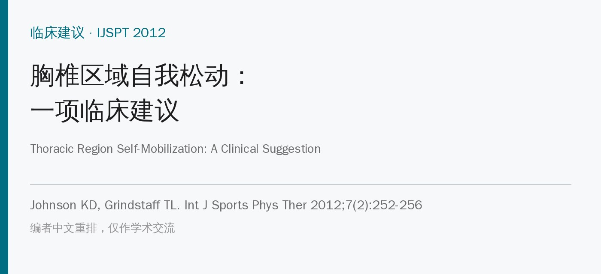
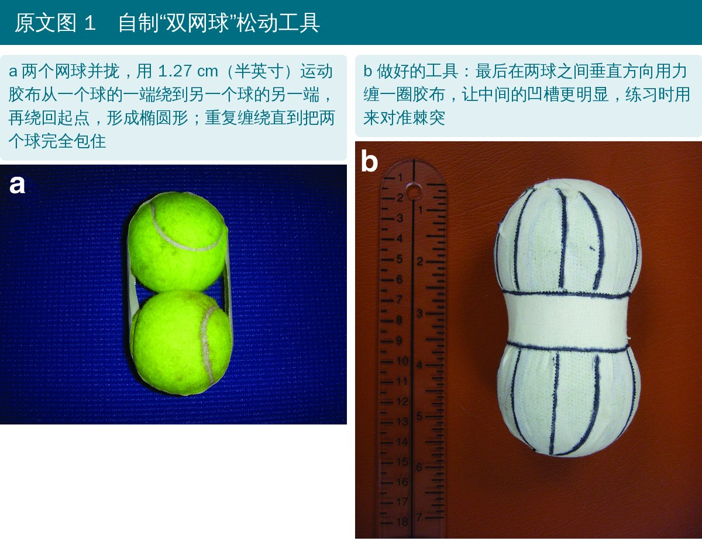
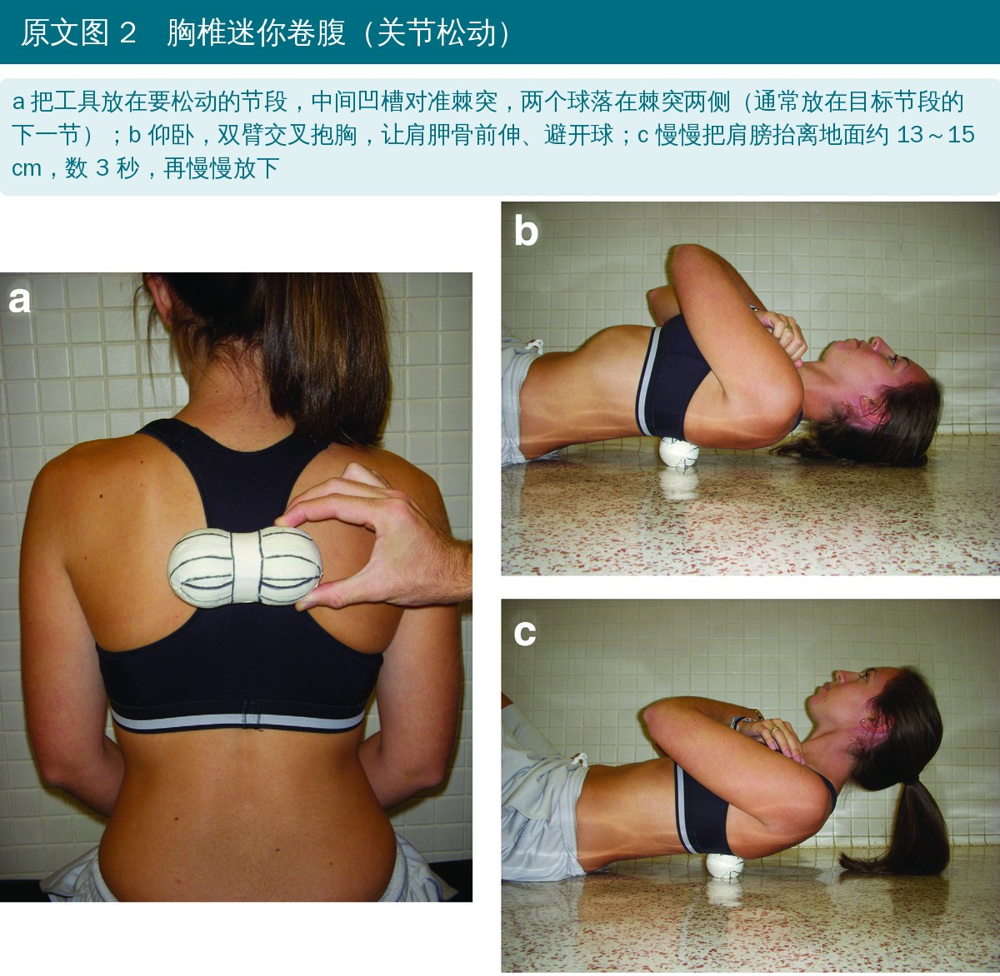
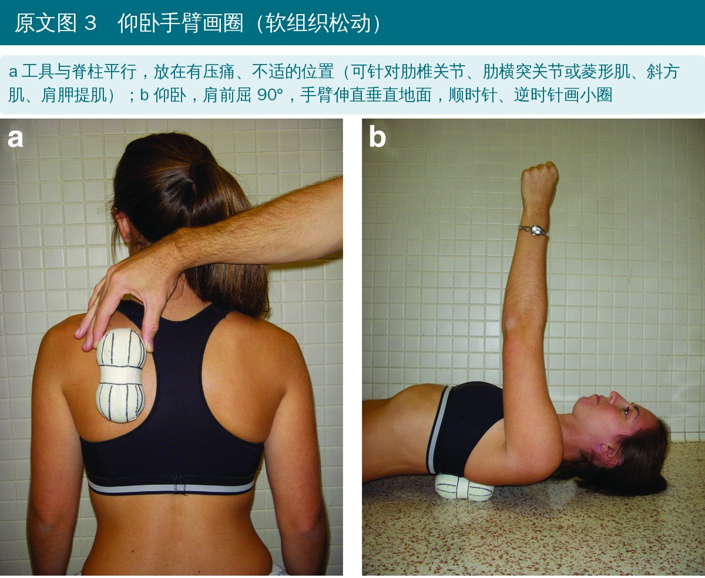
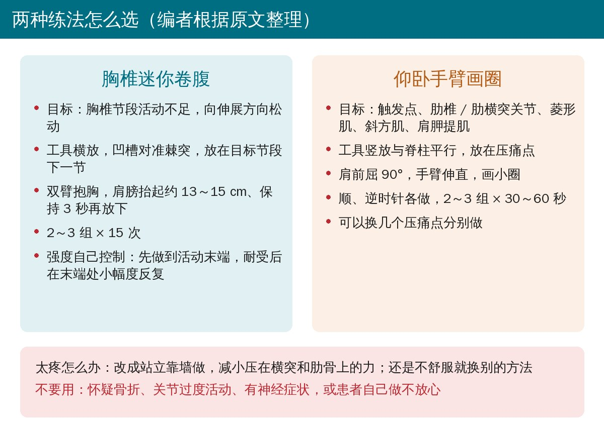
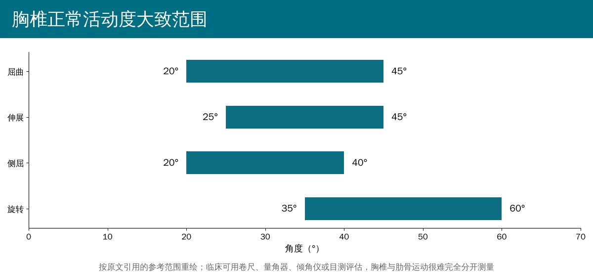

🔖原文信息（编者中文重排）
📚 文献信息
▪ Johnson KD, Grindstaff TL. Thoracic region self-mobilization: a clinical suggestion. Int J Sports Phys Ther. 2012;7(2):252-256.
▪ 中文题目：胸椎区域自我松动：一项临床建议
▪ 作者来自美国得克萨斯大学奥斯汀分校运动医学 / 运动防护部、克雷顿大学
▪ 文章类型：临床建议（Clinical Suggestion），介绍一种自制工具和两种练法，没有受试者和测量数据
胸椎和肋骨的问题常被认为会“自己好”。但越来越多的临床观点认为，胸椎和肋骨既能引起局部痛和牵涉痛，胸椎活动度还会影响颈椎、腰椎和肩带的动作模式。高尔夫、投掷、网球、赛艇等项目都需要足够的胸椎活动度，胸椎功能障碍还可能和呼吸困难、老年姿势问题有关。
• 胸椎运动和肋骨运动是耦合的：胸椎伸展时，后肋向后旋转（外扭转）并下降，前肋上抬
• 活动受限可能来自收缩组织（肌肉紧张、触发点），也可能来自非收缩组织（关节）
• 肌肉的问题用牵伸、软组织松动或持续按压；关节活动不足用关节松动或手法；关节过度活动则用运动训练改善神经肌肉控制
问题在于，大多数胸椎松动都离不开治疗师动手。泡沫轴是常见的自我松动工具，但价格和体积（比如坐飞机带着）在有些场景下不方便。作者因此介绍了一个便宜、便携、在防护室就能做的替代工具，以及两种用法。

🔖原文图 1（加中文说明）
• 材料：两个网球 + 半英寸（约 1.27 cm）运动胶布
• 两球并拢，胶布从一个球的一端绕过去，交叉到另一个球的另一端，再绕回起点，形成一个完整的椭圆；连续或分段重复，直到两个球被胶布完全包住
• 最后在两球之间垂直方向用力缠一圈，让中间的凹槽更明显，练习时用凹槽对准棘突

🔖原文图 2（加中文说明）
• 放置：工具横放在要松动的节段，棘突落在中间凹槽里，两个球压在棘突两侧；通常放在目标节段的下一节，向伸展方向松动
• 姿势：仰卧，双臂交叉抱胸，让肩胛骨前伸，球直接接触胸椎和肋骨而不是压在肩胛骨上
• 动作：慢慢把肩膀抬离地面（原文图注为 5～6 英寸，约 13～15 cm），数 3 秒，再放回地面
• 剂量：作者建议 2～3 组 × 15 次（文献对最佳组数和次数没有共识）
• 强度：可以先做到活动末端或进入阻力（类似 III 级松动），耐受后在阻力深处做小幅度动作（类似 IV 级松动），由患者自己控制
• 太疼：改成站立、把工具抵在墙上做，减小压在横突和肋骨上的力；仍不舒服就换别的方法

🔖原文图 3（加中文说明）
• 用途：用持续按压处理触发点；根据放置位置，可以针对肋椎关节、肋横突关节，或菱形肌、斜方肌、肩胛提肌等肩胛胸壁区域肌肉
• 放置：工具竖放、与脊柱平行，放在有不适或压痛的位置；有人需要换几个点分别做
• 动作：仰卧，肩前屈 90°，手臂伸直垂直于地面，顺时针或逆时针画小圈
• 剂量：作者建议 2～3 组，每组 30～60 秒，两个方向都做；不舒服时同样可以改成靠墙

🔖两种练法对照（编者根据原文整理）
这篇文章没有受试者，也没有任何疗效数据，以下是作者在讨论里给出的使用原则。
• 适用：关节活动度受损或附属运动受限，且被判断为病理性的；有背痛史，或怀疑由胸椎关节活动不足引起牵涉痛的人
• 不用：怀疑骨折、关节过度活动、有神经症状，或本人对自我松动感到不放心
• 可以和治疗师的手法松动配合使用，也适合忙碌的运动医学诊所和运动防护室

🔖按原文引用的参考范围重绘
作者引用的胸椎正常活动度大致范围：屈曲 20°～45°、伸展 25°～45°、侧屈 20°～40°、旋转 35°～60°。临床常用卷尺、量角器、倾角仪或目测评估。
• 证据等级最低：这是一篇临床建议，属于专家意见，没有任何数据证明两种练法有效，也没有和泡沫轴、治疗师手法比较
• “关节松动”只是推测：网球压在横突和肋骨上做卷腹，是否真的产生了节段性的关节滑动、改善了哪一节的活动度，文中没有测量
• 剂量是作者经验：2～3 组 × 15 次、30～60 秒，作者自己也说没有共识
• 没讲怎么判断该不该用：适应证是“关节活动不足”，但没有说明如何区分收缩组织和关节受限，也没有说如何筛查“关节过度活动”这个禁忌
• 定位凭感觉：患者自己很难准确找到目标节段，“放在下一节”也缺少解释
• 好处是成本几乎为零：两个网球加胶布，风险低、易携带，作为家庭练习或出差时的替代工具，试一试的代价很小
• “III 级和 V 级用于改善活动度”：原文写松动按 5 级划分，“III 级和 V 级”用于改善关节活动度，但紧接着讨论的是 III 级到 IV 级的进阶，V 级是快速手法，自我松动做不到；这里应是 III 级和 IV 级
• “反复振动”与“慢慢抬起保持 3 秒”：剂量写的是“15 次反复振动（oscillations）”，动作描述却是慢慢抬起、数 3 秒、再放下，两种说法不是同一种节奏
• 抬多高只在图注里：正文只说“把肩膀抬离地面”，抬起 5～6 英寸只出现在图 2 的图注
• “软组织松动”却针对关节：仰卧画圈被称为软组织松动，用来处理触发点，但同一段又说可以针对肋椎关节和肋横突关节
• 摘要说的是“胸椎和肋骨”的松动：但两种练法都没有专门针对肋骨的操作说明
• 先分清是肌肉紧还是关节卡：触诊和节段附属运动检查之后再选练法，关节活动不足选迷你卷腹，压痛点、触发点选仰卧画圈
• 工具 5 分钟就能做好：两个网球 + 运动胶布，中间缠紧形成凹槽；没有泡沫轴、出差带不了泡沫轴时可以用来代替
• 迷你卷腹：凹槽对准棘突，放在目标节段下一节，双臂抱胸，肩膀抬起 13～15 cm、保持 3 秒，2～3 组 × 15 次
• 仰卧画圈：工具竖放在压痛点，手臂伸直上举画小圈，两个方向各 30～60 秒，2～3 组
• 太疼就靠墙：站立靠墙可以减小压力；仍然不适就换方法
• 先排除禁忌：怀疑骨折、关节过度活动、有神经症状的人不要用；骨质疏松的人也要谨慎（编者补充）
• 用复测说话：练前练后测胸椎旋转或伸展，看活动度是否改善，再决定要不要放进家庭练习
表 1 两种自我松动练法（编者根据原文整理）
| 胸椎迷你卷腹 | 仰卧手臂画圈 | |
|---|---|---|
| 针对 | 胸椎节段关节活动不足（伸展方向） | 触发点；肋椎 / 肋横突关节；菱形肌、斜方肌、肩胛提肌 |
| 工具放置 | 横放，凹槽对准棘突，放在目标节段下一节 | 竖放，与脊柱平行，放在压痛点 |
| 体位 | 仰卧，双臂交叉抱胸 | 仰卧，肩前屈 90°，手臂伸直 |
| 动作 | 肩膀抬离地面约 13～15 cm，保持 3 秒再放下 | 手臂顺时针、逆时针画小圈 |
| 剂量 | 2～3 组 × 15 次 | 2～3 组 × 30～60 秒，两个方向 |
| 不耐受时 | 站立，工具抵墙 | 站立，工具抵墙 |
表 2 胸椎正常活动度参考范围（原文引用）
| 方向 | 范围 |
|---|---|
| 屈曲 | 20°～45° |
| 伸展 | 25°～45° |
| 侧屈 | 20°～40° |
| 旋转 | 35°～60° |
欢迎关注骨科康复小黄公众号，获取更多物理治疗的专业知识！
📄参考文献：
Johnson KD, Grindstaff TL. Thoracic region self-mobilization: a clinical suggestion. Int J Sports Phys Ther. 2012;7(2):252-256.
本文为中文解读，仅作学术交流：照片引自原文图 1～图 3（编者加中文说明），练法对照卡为编者根据原文整理，活动度图按原文引用的数值重绘，表格为编者整理翻译。